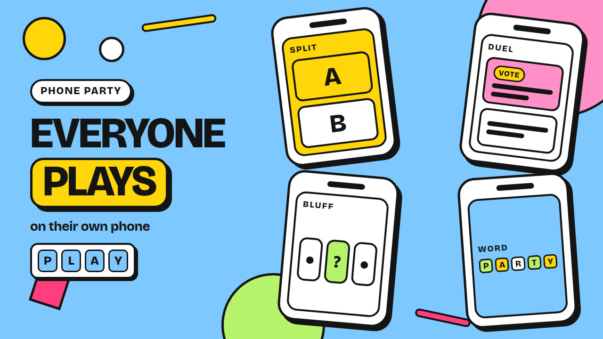

TipsyPlay Blog
Phone Party Games for Adults: Everyone Plays on Their Own Phone
Everyone already has a phone in their pocket. Turn that into the game board: one person hosts, friends join with a code or QR, and the whole room plays the same round at the same time.
You must be of legal drinking age in your location.

On this page
How a phone party game works
- One host. Someone opens the game page and taps Host Game.
- Everyone joins. Friends scan the QR code or type the room code on their own phone.
- Private screens. Secret picks, secret words and answers stay on your phone until the reveal.
- No props. No cards, pens or dice. You do need a connection.
Start everyone together. Some games won't let a new phone into a round that has already started, so wait for stragglers or bring them in at the next game.
Split Decision: read the room
2 to 10 players · eight rounds · points only
A silly would-you-rather appears. Everyone secretly locks A or B. Then you guess how many of the other players picked A.
- Exact guess: 2 points. One away: 1 point.
- With only two eligible players, exact is 1 point and a miss is 0.
- Pass on the first pick and you sit that round out. Pass on the guess and your pick still counts.
You never score for siding with the majority. You score for knowing your friends. The game's own drink-free twist: whoever picked the minority side takes a bow, and the bow is optional too.
Punchline Duel: the funnier answer wins
3 to 12 players · 5, 8 or 12 rounds
Two players get the same funny prompt and type an answer. Everyone else sees both answers side by side and votes for the funnier one. The winning writer scores a point, and a tie is nobody's loss.
The duels rotate around the table, so you switch between writing and judging. Short answers usually land best.
Alcohol-free option: in the lobby, tap No drinking. The losing writer does the alternative instead, and nobody is listed to drink.
Odd Word Out: catch the bluffer
4 to 10 players · 5, 8 or 12 rounds
Every phone shows the same secret word, except one. That player is the mole and only sees the category.
- Go around and say one clue out loud.
- Vote for the player you think is bluffing. A catch needs a clear majority.
- If the mole is caught, they get one chance to guess the word.
Catch the mole and the group scores. If the mole slips away, or gets caught but guesses the word, the mole scores. The mole role rotates, so most people get a turn.
Alcohol-free option: tap No drinking in the lobby and the losing side does the alternative.
Five Letter Frenzy: one word, one grid
3 to 8 players · six guesses for the whole table
There is one secret five-letter word and one shared grid. Players take turns adding a guess, and every guess helps the next person.
- You score for letters you lock in, plus a bonus for solving it.
- A miss offers one small drink, a 5-second pose, or Pass. Nothing stacks.
- The host can switch on Points only for the table, and anyone can tick Points only for me. Then a miss just moves the turn.
Which one first?
- Just two of you: Split Decision. More ideas in Games for 2: A No-Pressure Night-In Plan.
- A crowd that likes to laugh: Punchline Duel. It takes up to 12 players.
- Friends who love a bluff: Odd Word Out. You need at least four.
- Word nerds: Five Letter Frenzy.
- Not sure? Try How to Choose a Party Game for Your Group Tonight, or browse games for big groups and no-prop games.
Host tips before you start
- Put out soft drinks and mocktails where everyone can reach them.
- Choose points or No drinking before the first round. Points work for every game here.
- Say it once: "Passing is always fine. No explanation needed."
- Turn the brightness up and let people sit where they can still see each other. The fun is in the faces at the reveal.
- Play a single round first. People pick up the rules faster by playing than by listening.
Want a fully alcohol-free night? See How to Host an Alcohol-Free Party Game Night.
Play responsibly
You must be of legal drinking age in your location.
Every game in this guide is opt-in. Passing is always allowed, without explanation or a replacement task. Soft drinks, mocktails and alcohol-free play are full options. No drinking races, chugging, pressure to finish a drink, or penalties that stack from one turn to the next. If you choose alcohol, keep any drink small and optional. Never drink and drive. Plan a ride home before you start.
Ready when your friends are
Start with Split Decision. It works for two players or ten, and points are the whole game.